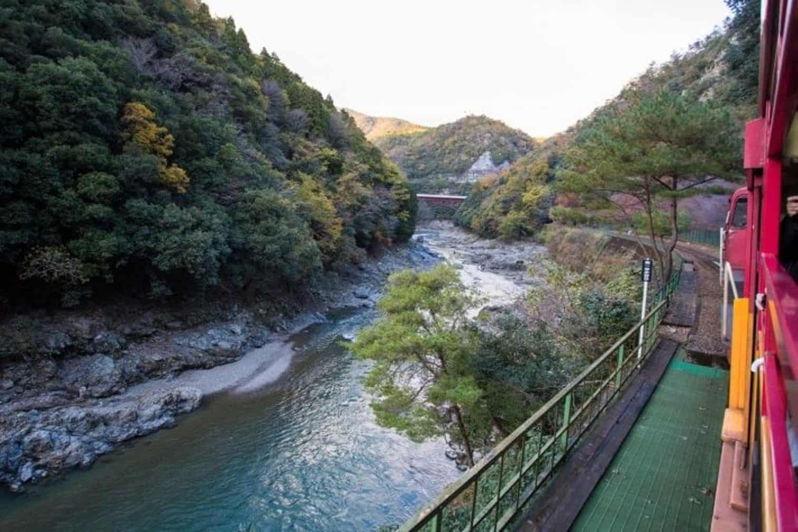
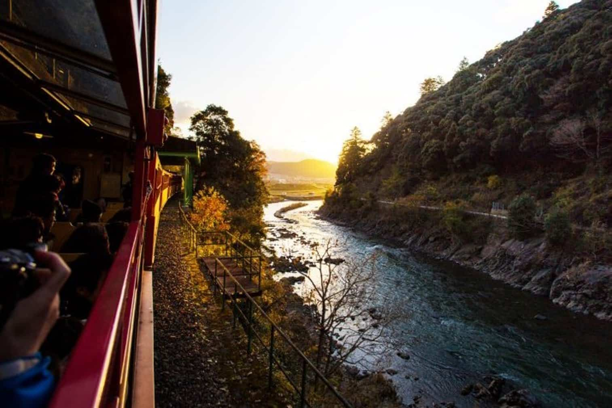

Uma jornada inesquecível sobre trilhos.
Embarque no renomado Trem Expresso Sul-Americano, considerado um dos melhores passeios de trem do mundo, à bordo de um dos trens mais antigos em funcionamento.
Durante a viagem, você será envolvido por vistas deslumbrantes de montanhas, vales, rios, cascatas, penhascos e desfiladeiros. Tudo isso, enquanto explora a fascinante história da Estrada de Ferro e da Maria-Fumaça e aproveita o charme dos vagões históricos.
Durante o trajeto de aproximadamente 7h, o trem passa por 41 pontes e 13 túneis, percorrendo a ferrovia que é considerada um milagre arquitetônico e uma obra-prima da engenharia mundial.
